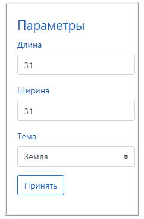
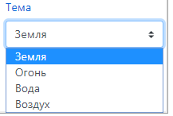
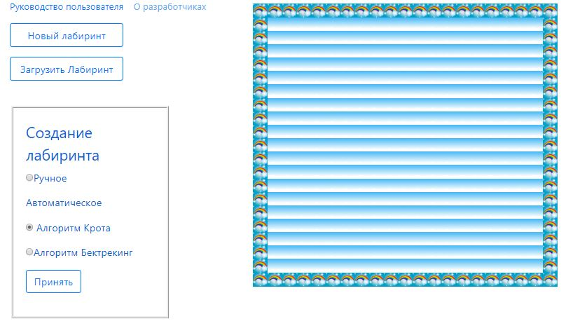
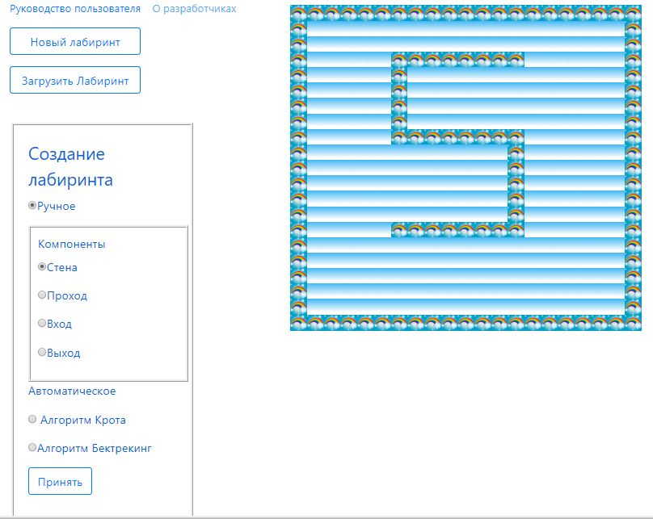
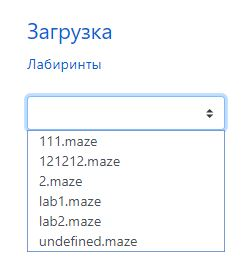

Содержание:
Для того чтобы сгенерировать лабиринт, необходимо задать параметры в группе элементов «Параметры» (рисунок 1): длину лабиринта (можно выбрать только нечётные значение в диапазоне от 7 до 31) и ширину лабиринта (можно выбрать только нечётные значения от 7 до 31). Тему лабиринта можно выбрать из выпадающего списка. В системе реализовано 4 темы, соответствующих стихиям (рисунок 2). При нажатии на кнопку «Принять» сгенерируется периметр лабиринта и откроется новая группа элементов «Создание лабиринта» (рисунок3).

Рисунок 1 – Группа элементов «Параметры»

Рисунок 2 – Список тем
В группе элементов «Создание лабиринта» есть возможность выбора способа расстановки: ручной или автоматический: «Крота» или «Бэктрекинга».

Рисунок 3 – Сгенерированный периметр лабиринта
При выборе автоматической расстановки необходимо нажать кнопку «Принять». После нажатия кнопки на периметре лабиринта появится сгенерированный выбранным алгоритмом лабиринт, группа элементов «Создание лабиринта» исчезнет. Группа элементов «Поиск пути» станет доступна для выбора (рисунок А.4).
Рисунок 4 – Автоматическая генерация
При выборе ручного способа расстановки элементов кнопка появится новая группа элементов «Компоненты» (рисунок А.5), из которой можно выбрать необходимый компонент и поставить в соответствии с правилами расстановки. После расстановки компонентов необходимо нажать кнопку «Принять». Если компоненты установлены, то группа элементов «Создание лабиринта» исчезнет, а группа элементов «Поиск пути» станет доступна для выбора (рисунок А.6).

Рисунок А.5 – Группа элементов «Компоненты»
Рисунок 6 – Ручное составление лабиринта
В группе элементов «Поиск пути» можно выбрать один из алгоритмов прохождения «Волновой» или «Правой руки» и скорость прохождения при помощи ползунка, где самое левое положение – это медленно, а крайнее правое – это быстрое построение лабиринта (рисунок А.7). После выбора алгоритма поиска и установки скорости прохождения необходимо нажать на кнопку «Принять». После чего начнётся анимация прохождения лабиринта (рисунок А.8).

Рисунок 7 – Группа элементов «Поиск пути»

Рисунок 8 – Пройденный лабиринт
После генерации лабиринта станет доступно сохранение лабиринта в файл. Для того чтобы сохранить лабиринт, необходимо нажать на кнопку «Сохранить лабиринт» (рисунок А.9).

Рисунок 9 – Сохранение лабиринта
Для того чтобы загрузить лабиринт, необходимо нажать на кнопку «Загрузить лабиринт». После этого откроется окно со списком лабиринтов (рисунок А.10), загрузить понравившийся лабиринт, нажав кнопку «Загрузить».

Рисунок 10 – Окно списка лабиринтов
После загрузки лабиринта можно искать в нём путь либо редактировать его структуру. После редактирования можно сохранить лабиринт как новый, для этого необходимо нажать кнопку «Сохранить лабиринт».